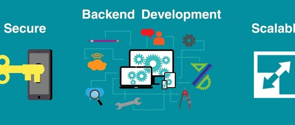
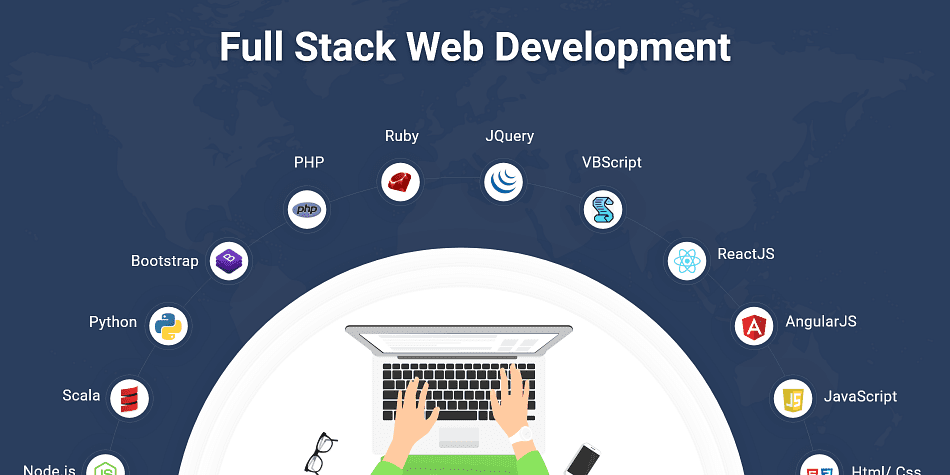
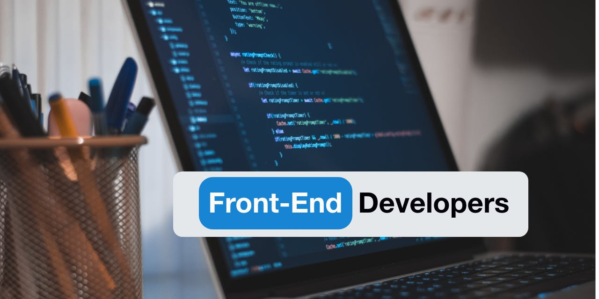
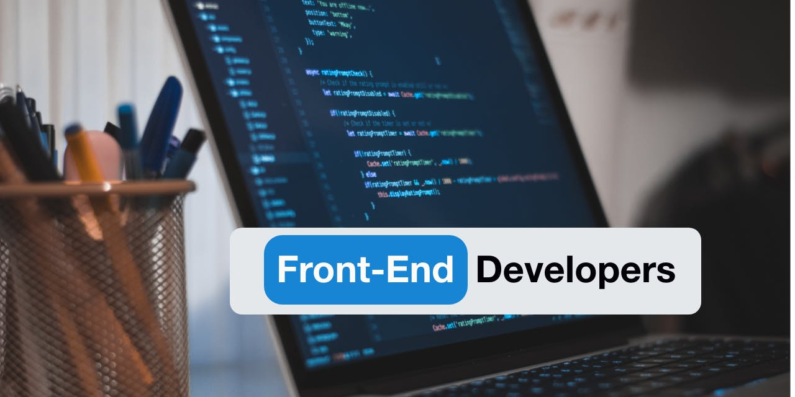

Ada 3 Skill IT dalam Web Development yaitu Front-End, Back-End dan Full-Stack Developer.
Front-End Developer
Front-end adalah bagian depan website yang diakses oleh user. Apa yang Anda lihat saat membuka website, mulai dari warna dan font tulisan sampai dengan menu dropdown dan slider yang ada pada website diatur dengan menggunakan bahasa coding HTML, CSS, dan JavaScript yang dikontrol oleh browser komputer Anda. Ini adalah yang dimaksud dengan front-end.
Front-end developer adalah orang yang bertanggung jawab atas tampilan depan website termasuk penyusunan serta pengelolaan website untuk membuat user interface dan user experience yang bagus bagi user website. Seorang front-end developer diharuskan untuk memahami tiga bahasa pemograman utama yaitu HTML, CSS, dan JavaScript.
Front-end developers biasa bekerja sama dengan designer untuk membuat mockups dari development (pengembangan) sampai website itu jadi. Front-end developer yang ahli juga bisa mengidentifikasi masalah apa yang ada pada user experience dan memberikan rekomendasi selama proses desain agar mereka tidak memiliki masalah yang sama.
Back-End Developer

Back-end sebuah website terdiri dari sebuah server, aplikasi, dan database. Developer back-end bertanggung jawab untuk membangun dan mengelola teknologi yang mendukung ketiga komponen tersebut. Ini dilakukan agar front-end sebuah website bisa dibuat.
Biasanya job description untuk web developers yang berfokus pada back-end developers harus familiar dengan framework PHP seperti Zend, Symfony, dan CakePHP, pengalaman dengan version control software seperti SVN, CVS, atau Git, dan pengalaman dengan Linux sebagai sistem pengembangan dan deployment.
Back-end developer biasa menggunakan tools ini untuk membuat atau berkontribusi ke aplikasi web dengan kode yang bersih, portable, dan terdokumentasi dengan baik.Tetapi sebelum Anda menulis kode tersebut, back-end developer perlu berkolaborasi dengan tim lain untuk mengerti apa yang ingin dicapai dengan website ini.
Full-stack Developer

Fullstack developer bekerja pada bagian frontend dan backend. Mereka menguasai HTML, CSS, JavaScript, dan satu atau lebih bahasa pemrograman backend. Perkembangan teknologi saat ini membuat perbedaan frontend dan backend development menjadi semakin sedikit. Banyak hal yang sebelumnya hanya bisa dilakukan pada bagian backend, dapat dilakukan juga melalui frontend. Ini membuat semakin banyaknya developer yang menguasai frontend dan backend programming sekaligus. Pada saat ini, menjadi full stack developer juga menambah nilai khusus kita di mata perusahaan.
Berapa Gaji Programmer web development?
Permintaan akan website yang tinggi, barang tentu berbanding lurus dengan permintaan tenaga ahli pembuat website. Di Indonesia, bayaran untuk seorang pengembang website tidaklah murah. Dilansir dari id.neuvoo.com , salah satu platform lowongan pekerjaan, gaji rata-rata seorang pengembang website berkisar 72 juta rupiah per tahunnya. Figur tersebut tentu menjadi salah satu penguat atau motivasi kita untuk belajar membuat website dari dicoding. Siap belajar? Yuk, mulai belajar website!.


 
